比赛列表
共 1313 场1414 场3030 场30184 场052 场07 场024 场06 场017 场074 场；赛前看方向与比分，赛后就地对照赛果。
胜平负队名旁为近 5 场
11/14 · 0 场74 场未开赛
09:00麒麟挑战杯秘鲁 VS玻利维亚仅赛程
VS玻利维亚仅赛程
13:00日职乙大分三神 VS
VS 栃木市FC仅赛程
栃木市FC仅赛程
13:00日职乙大宫松鼠RB VS
VS 山形山神仅赛程
山形山神仅赛程
13:00日职乙新潟天鹅 VS宫崎特格瓦雅罗仅赛程
VS宫崎特格瓦雅罗仅赛程
13:00日职乙湘南海洋VS 横滨FC仅赛程
横滨FC仅赛程
13:00日职乙藤枝MYFC VS
VS 甲府风林仅赛程
甲府风林仅赛程
16:00麒麟挑战杯泰国国奥 VSSingapore U23仅赛程
VSSingapore U23仅赛程
17:00麒麟挑战杯Turkey U18VSGermany U18仅赛程
18:15麒麟挑战杯日本VS 巴西仅赛程
巴西仅赛程
19:00麒麟挑战杯England U18 VSNorway U19仅赛程
VSNorway U19仅赛程
19:00麒麟挑战杯Netherlands U18VSSwitzerland U18仅赛程
20:00麒麟挑战杯中国男足 VSMalaysia仅赛程
VSMalaysia仅赛程
20:00麒麟挑战杯越南国奥 VS
VS 卡塔尔国奥仅赛程
卡塔尔国奥仅赛程
20:30英乙埃克塞特城VS切尔滕汉姆仅赛程
21:00法国杯凡尔赛VS 罗德兹仅赛程
罗德兹仅赛程
21:00法国杯圣雷南VS拉瓦勒仅赛程
21:00西乙巴拉多利德VS卡斯特利翁仅赛程
21:30法国杯布莱 VS索肖仅赛程
VS索肖仅赛程
22:00欧国联科索沃 VS以色列仅赛程
VS以色列仅赛程
23:00法国杯丰特奈VS克莱蒙仅赛程
23:00法国杯夏龙VS上里昂仅赛程
23:00苏冠StenhousemuirVS女王公园仅赛程
23:00苏冠利文斯顿
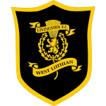
VS格里诺克摩顿仅赛程23:00苏冠帕尔蒂克蓟花VSInverness CT仅赛程
23:00苏冠艾尔联VS雷斯流浪仅赛程
23:00英乙什鲁斯伯里VS 奥德汉姆仅赛程
奥德汉姆仅赛程
23:00英乙克鲁VS纽波特郡仅赛程
23:00英乙布里斯托尔流浪者VS切斯特菲尔德仅赛程
23:00英乙斯温登VS 格里姆斯比仅赛程
格里姆斯比仅赛程
23:00英乙沃尔索尔VS巴尼特仅赛程
23:00英乙科尔切斯特联VS吉林汉姆仅赛程
23:00英乙维尔港VS 阿克灵顿仅赛程
阿克灵顿仅赛程
23:00英乙罗奇代尔VS约克城仅赛程
23:00英乙罗瑟汉姆联VS 克劳利仅赛程
克劳利仅赛程
23:00英乙萨尔福德城VS北安普顿仅赛程
23:00英甲卢顿VS剑桥联仅赛程
23:00英甲唐卡斯特VS莱顿东方仅赛程
23:00英甲布鲁姆利 VS
VS 诺茨郡仅赛程
诺茨郡仅赛程
23:00英甲彼得堡联VS牛津联仅赛程
23:00英甲斯托克港VS雷丁仅赛程
23:00英甲斯蒂文尼奇VS曼斯菲德仅赛程
23:00英甲温布尔登VS 布莱克浦仅赛程
布莱克浦仅赛程
23:00英甲米尔顿凯恩斯 VS
VS 伯顿仅赛程
伯顿仅赛程
23:00英甲维冈竞技 VS
VS 巴恩斯利仅赛程
巴恩斯利仅赛程
23:00英甲莱斯特城VS布拉德福德城仅赛程
23:00英甲谢菲尔德星期三 VS普利茅斯仅赛程
VS普利茅斯仅赛程
23:00英甲韦康比VS哈德斯菲尔德仅赛程
23:15西乙皇家社会B队 VS希洪竞技仅赛程
VS希洪竞技仅赛程
23:30荷乙布雷达 VS
VS 埃门仅赛程
埃门仅赛程
00:00U21欧预赛土耳其U21VS 捷克U21仅赛程
捷克U21仅赛程
00:15U21欧预赛芬兰U21VS爱尔兰U21仅赛程
01:00欧国联摩尔多瓦 VS
VS 哈萨克斯坦仅赛程
哈萨克斯坦仅赛程
01:00麒麟挑战杯德国U21 VS比利时U21仅赛程
VS比利时U21仅赛程
01:30U21欧预赛丹麦U21 VS荷兰U21仅赛程
VS荷兰U21仅赛程
01:30麒麟挑战杯法国U21 VS
VS 意大利U21仅赛程
意大利U21仅赛程
02:00麒麟挑战杯Albania U21 VS卢森堡U21仅赛程
VS卢森堡U21仅赛程
02:00麒麟挑战杯约旦VS印度尼西亚仅赛程
03:00法国杯圣菲尔贝尔VS罗切VF仅赛程
03:00法国杯第戎 VS奥尔良仅赛程
VS奥尔良仅赛程
03:00麒麟挑战杯Chile U20VSMexico U20仅赛程
03:30西乙莱加内斯VS布尔戈斯仅赛程
03:30麒麟挑战杯英格兰U21 VS葡萄牙U21仅赛程
VS葡萄牙U21仅赛程
03:45欧国联保加利亚 VS
VS 冰岛仅赛程
冰岛仅赛程
03:45欧国联列支敦士登VS阿塞拜疆仅赛程
03:45欧国联卢森堡 VS
VS 爱沙尼亚仅赛程
爱沙尼亚仅赛程
03:45欧国联塞尔维亚 VS
VS 德国仅赛程
德国仅赛程
03:45欧国联安道尔VS
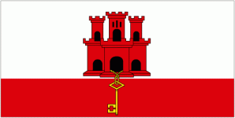
直布罗陀仅赛程03:45欧国联斯洛伐克 VS
VS 法罗群岛仅赛程
法罗群岛仅赛程
03:45欧国联斯洛文尼亚 VS
VS 瑞士仅赛程
瑞士仅赛程
03:45欧国联苏格兰 VS
VS 北马其顿仅赛程
北马其顿仅赛程
03:45欧国联荷兰 VS
VS 希腊仅赛程
希腊仅赛程
07:00麒麟挑战杯阿根廷 VS
VS 乌拉圭仅赛程
乌拉圭仅赛程
08:00麒麟挑战杯厄瓜多尔 VS哥斯达黎加仅赛程
VS哥斯达黎加仅赛程
08:00麒麟挑战杯哥伦比亚 VS
VS 智利仅赛程
智利仅赛程
11/13 · 0 场17 场未开赛
19:00麒麟挑战杯Czech Republic U18VSPoland U18仅赛程
20:00麒麟挑战杯Chinese TaipeiVSKyrgyzstan仅赛程
20:00麒麟挑战杯新加坡VS 巴拉圭仅赛程
巴拉圭仅赛程
21:00麒麟挑战杯United Arab EmiratesVS洪都拉斯仅赛程
22:30麒麟挑战杯沙特阿拉伯VS韩国仅赛程
22:45麒麟挑战杯卡塔尔VS澳大利亚仅赛程
01:00欧国联亚美尼亚 VS
VS 塞浦路斯仅赛程
塞浦路斯仅赛程
01:00欧国联土耳其 VS
VS 比利时仅赛程
比利时仅赛程
01:00麒麟挑战杯立陶宛VS苏里南仅赛程
02:00国王杯纳瓦卡内罗VS 贝蒂斯仅赛程
贝蒂斯仅赛程
02:00法国杯尚贝里VS格勒诺布尔仅赛程
03:45欧国联圣马力诺VS白俄罗斯仅赛程
03:45欧国联意大利 VS
VS 法国仅赛程
法国仅赛程
03:45欧国联捷克 VS
VS 西班牙仅赛程
西班牙仅赛程
03:45欧国联英格兰 VS
VS 克罗地亚仅赛程
克罗地亚仅赛程
03:45欧国联阿尔巴尼亚 VS
VS 芬兰仅赛程
芬兰仅赛程
03:45欧国联黑山 VS
VS 拉脱维亚仅赛程
拉脱维亚仅赛程
11/12 · 0 场6 场未开赛
14:00麒麟挑战杯新西兰 VSIndia仅赛程
VSIndia仅赛程
16:00麒麟挑战杯泰国国奥VS卡塔尔国奥仅赛程
20:00麒麟挑战杯Singapore U23VS越南国奥仅赛程
21:00U21欧预赛冰岛U21VS
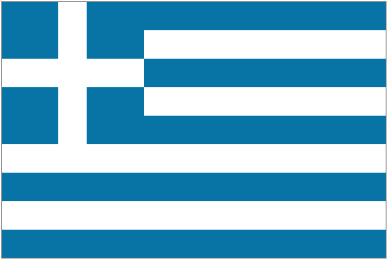
希腊U21仅赛程21:00麒麟挑战杯苏格兰U21VS乌克兰U21仅赛程
23:00麒麟挑战杯乌兹别克斯坦VS俄罗斯仅赛程
11/11 · 0 场24 场未开赛
18:00日联杯川崎前锋 VS
VS 柏太阳神仅赛程
柏太阳神仅赛程
18:00日联杯横滨水手 VS
VS 鹿岛鹿角仅赛程
鹿岛鹿角仅赛程
18:00日联杯神户胜利船 VS
VS 町田泽维亚仅赛程
町田泽维亚仅赛程
18:00麒麟挑战杯Switzerland U18VSNorway U19仅赛程
18:30日联杯浦和红钻 VS
VS 大阪樱花仅赛程
大阪樱花仅赛程
20:00麒麟挑战杯VietnamVSChinese Taipei仅赛程
22:00麒麟挑战杯England U18VSNetherlands U18仅赛程
03:00英锦赛伯顿VS诺茨郡仅赛程
03:00英锦赛克鲁VS维冈竞技仅赛程
03:00英锦赛北安普顿VS吉林汉姆仅赛程
03:00英锦赛哈德斯菲尔德VS利物浦 U21仅赛程
03:00英锦赛巴尼特VS莱顿东方仅赛程
03:00英锦赛巴恩斯利VS奥德汉姆仅赛程
03:00英锦赛布里斯托尔流浪者VS雷丁仅赛程
03:00英锦赛斯托克港VS特兰米尔流浪者仅赛程
03:00英锦赛斯蒂文尼奇VS富勒姆 U21仅赛程
03:00英锦赛普利茅斯VS斯温登仅赛程
03:00英锦赛曼斯菲德VS切斯特菲尔德仅赛程
03:00英锦赛格里姆斯比VS诺丁汉森林 U21仅赛程
03:00英锦赛牛津联VS切尔滕汉姆仅赛程
03:00英锦赛莱斯特城VS沃尔索尔仅赛程
03:00英锦赛谢菲尔德星期三VS阿克灵顿仅赛程
03:30英锦赛布拉德福德城VS约克城仅赛程
03:30英锦赛布鲁姆利VS米尔顿凯恩斯仅赛程
11/10 · 0 场7 场未开赛
16:00麒麟挑战杯卡塔尔国奥VSSingapore U23仅赛程
20:00麒麟挑战杯越南国奥VS泰国国奥仅赛程
02:00丹甲HvidovreVSAarhus Fremad仅赛程
02:00罗甲博托沙尼VS加拉茨钢铁仅赛程
03:30英足总杯普利茅斯大道VS伯克姆斯特德仅赛程
03:30西乙萨瓦德尔VS皇家社会B队仅赛程
04:15葡甲托里什恩斯 VS莱里亚仅赛程
VS莱里亚仅赛程
11/09 · 0 场52 场未开赛
10:10墨超莱昂VS瓜达拉哈拉仅赛程
00:00奥超格风暴 VS
VS 萨尔茨堡红牛仅赛程
萨尔茨堡红牛仅赛程
00:00挪超利勒斯特罗姆 VS
VS
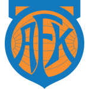
奥勒松仅赛程00:00挪超桑讷菲尤尔 VS
VS 莫尔德仅赛程
莫尔德仅赛程
00:00挪超汉坎 VS
VS 萨普斯堡仅赛程
萨普斯堡仅赛程
00:00挪超维京 VS奥斯陆KFUM仅赛程
VS奥斯陆KFUM仅赛程
00:00苏超凯尔特人 VS基尔马诺克仅赛程
VS基尔马诺克仅赛程
00:15意乙卡拉雷塞VS桑普多利亚仅赛程
00:15法甲勒芒 VS
VS 摩纳哥仅赛程
摩纳哥仅赛程
00:15法甲勒阿弗尔 VS洛里昂仅赛程
VS洛里昂仅赛程
00:15法甲布雷斯特 VS
VS 里昂仅赛程
里昂仅赛程
00:15法甲昂热 VS
VS 尼斯仅赛程
尼斯仅赛程
00:30希腊超克里特 VS阿特罗米托斯仅赛程
VS阿特罗米托斯仅赛程
00:30德甲弗赖堡 VS
VS 柏林联合仅赛程
柏林联合仅赛程
00:30波兰超华沙莱吉亚VS琴斯托霍瓦仅赛程
00:30英超曼联 VS
VS 阿斯顿维拉仅赛程
阿斯顿维拉仅赛程
01:00丹麦超中日德兰VS桑德捷斯基仅赛程
01:00意甲国际米兰 VS
VS 科莫仅赛程
科莫仅赛程
01:00捷甲比尔森胜利 布斯巴达仅赛程
布斯巴达仅赛程
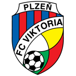
VS01:00罗甲克卢日VS 克拉约瓦大学仅赛程
克拉约瓦大学仅赛程
01:15英足总杯奥德汉姆VS谢菲尔德星期三仅赛程
01:30比甲圣吉联合 VS亨克仅赛程
VS亨克仅赛程
01:30西乙希洪竞技VS巴拉多利德仅赛程
01:30西乙拉斯帕尔马斯VS埃尔登斯仅赛程
01:30西甲比利亚雷亚尔 VS
VS 赫塔费仅赛程
赫塔费仅赛程
01:30西甲维戈塞尔塔 VS
VS 莱万特仅赛程
莱万特仅赛程
02:00土超贝西克塔斯 VS青年联合仅赛程
VS青年联合仅赛程
02:00智利甲智利大学VS科布雷萨尔仅赛程
02:00智利甲纽布莱恩斯VS科洛科洛仅赛程
02:00葡甲葡萄牙体育B队VS通德拉仅赛程
02:00葡超吉马良斯 VS
VS 波尔图仅赛程
波尔图仅赛程
02:15挪超腓特烈斯塔 VS
VS 布兰仅赛程
布兰仅赛程
02:15比乙洛克伦VS登德尔仅赛程
02:15比甲圣雷登VS聚尔特瓦雷赫姆仅赛程
02:30德甲霍芬海姆 VS
VS 沙尔克04仅赛程
沙尔克04仅赛程
02:30意乙维琴察VS克雷莫纳仅赛程
03:00巴乙米纳斯吉拉斯竞技VS戈亚尼亚竞技仅赛程
03:00希腊超奥林匹亚科斯VS帕奥克仅赛程
03:00荷甲乌德勒支 VS
VS 奈梅亨仅赛程
奈梅亨仅赛程
03:15波兰超波兹南莱赫 VS
VS
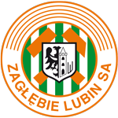
卢宾扎格勒比仅赛程03:45意甲佛罗伦萨 VS
VS 尤文图斯仅赛程
尤文图斯仅赛程
03:45法甲朗斯 VS
VS 马赛仅赛程
马赛仅赛程
04:00巴西杯达伽马 VS
VS 帕梅拉斯仅赛程
帕梅拉斯仅赛程
04:00西甲马竞 VS
VS 巴萨仅赛程
巴萨仅赛程
04:30智利甲拉卡莱拉联合VS瓦奇巴托仅赛程
04:30葡超里奥阿维VS布拉加仅赛程
04:30葡超阿马多拉之星 VS
VS 本菲卡仅赛程
本菲卡仅赛程
06:15巴乙塞阿拉VS米内罗美洲仅赛程
06:15巴乙戈亚斯VS庞特普雷塔仅赛程
06:30阿职联科尔多瓦中央VS拉努斯仅赛程
07:00智利甲康塞普西翁大学VS奥希金斯仅赛程
08:00墨超克雷塔罗VS普埃布拉仅赛程
11/08 · 30 场184 场今日
09:00墨超托卢卡VS蒙特雷仅赛程
09:00墨超老虎大学VS蓝十字仅赛程
09:00阿职联科尔多瓦学院VS纽维尔老男孩仅赛程
11:10墨超普马斯VS美洲队仅赛程
12:00日职乙八户南源VS 札幌冈萨多仅赛程
札幌冈萨多仅赛程
12:00澳超麦克阿瑟FC VS
VS 布里斯班狮吼仅赛程
布里斯班狮吼仅赛程
13:00周日001日职联町田泽维13:00日职乙栃木市FCVS大宫松鼠RB仅赛程
13:00日职乙磐田喜悦VS湘南海洋仅赛程
13:00日职联神户胜利船VS浦和红钻仅赛程
13:00韩K2天安城VS釜山偶像仅赛程
13:00韩K2水原三星蓝翼VS龙仁FC仅赛程
13:00韩K联大田韩亚市民 VS
VS 仁川联仅赛程
仁川联仅赛程
14:00周日003澳超阿德莱德14:00日职乙仙台维加泰 VS甲府风林仅赛程
VS甲府风林仅赛程
14:00澳超阿德莱赫 VS
VS 墨胜利仅赛程
墨胜利仅赛程
15:30周日005韩K联江原FC15:30中超上海海港 VS辽宁铁人仅赛程
VS辽宁铁人仅赛程
15:30中超上海申花 VS青岛西海岸仅赛程
VS青岛西海岸仅赛程
15:30中超云南玉昆VS武汉三镇仅赛程
15:30中超北京国安 VS重庆铜梁龙仅赛程
VS重庆铜梁龙仅赛程
15:30中超大连英博VS天津津门虎仅赛程
15:30中超山东泰山VS梅州客家仅赛程
15:30中超浙江队VS河南队仅赛程
15:30中超青岛海牛VS深圳新鹏城仅赛程
15:30韩K2坡州市民VS牙山木槿花仅赛程
15:30韩K联富川FC 1995VS 浦项铁人仅赛程
浦项铁人仅赛程
16:00日职联千叶市原 VS
VS 水户蜀葵仅赛程
水户蜀葵仅赛程
18:30土超里泽体育VS埃尔祖鲁姆体育仅赛程
19:00丹麦超哥本哈根FC VS布隆德比仅赛程
VS布隆德比仅赛程
19:00葡甲CD费伦斯VS路西塔尼亚仅赛程
19:00葡甲波尔图B队VS波尔蒂芒斯仅赛程
19:15荷乙维迪斯 VS
VS 格拉夫夏普仅赛程
格拉夫夏普仅赛程
19:15荷甲海伦芬 VS
VS 费耶诺德仅赛程
费耶诺德仅赛程
19:30周日006意甲那不勒斯20:00捷甲特普利采VS帕尔杜比采仅赛程
20:00英足总杯斯塔福德流浪者VS格里姆斯比仅赛程
20:30德乙波鸿 VS卡斯鲁厄仅赛程
VS卡斯鲁厄仅赛程
20:30德乙海登海姆 VS
VS 汉诺威96仅赛程
汉诺威96仅赛程
20:30德乙马格德堡VS圣保利仅赛程
20:30比甲布鲁日 VS
VS 安德莱赫特仅赛程
安德莱赫特仅赛程
21:00周日007西甲埃尔切21:00丹麦超奥胡斯
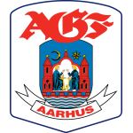
VS霍森斯仅赛程21:00土超乔鲁姆VS 费内巴切仅赛程
费内巴切仅赛程
21:00瑞典超哈尔姆斯塔德VS 迪格弗斯仅赛程
迪格弗斯仅赛程
21:00瑞典超哥德堡 VS
VS 马尔默仅赛程
马尔默仅赛程
21:00瑞士超圣加伦VS卢加诺仅赛程
21:00芬超库普斯 VS
VS 图尔库国际仅赛程
图尔库国际仅赛程
21:00芬超赫尔辛基HJK VS
VS 奥卢仅赛程
奥卢仅赛程
21:00芬超赫尔辛基火花 VS
VS 瓦萨仅赛程
瓦萨仅赛程
21:00西乙安道尔FCVS马略卡已延期
21:30周日009荷甲特温特21:30奥超哈特堡格VS阿尔特阿赫仅赛程
21:30奥超瓦滕斯VS奥地利维也纳仅赛程
21:45波兰超雅盖隆尼亚VS卡托维兹仅赛程
22:00周日011英超桑德兰22:00意乙恩特拉VS
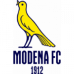
摩德纳仅赛程22:00捷甲亚布洛内茨VS姆拉达博莱斯拉夫仅赛程
22:00捷甲斯拉维亚 VSArtis仅赛程
VSArtis仅赛程
22:00法甲雷恩 VS
VS 里尔仅赛程
里尔仅赛程
22:00罗甲塞普西VS沃伦塔里仅赛程
22:00英超布莱顿VS 布伦特福德仅赛程
布伦特福德仅赛程
22:00葡甲法伦斯VS本菲卡B队仅赛程
22:15英足总杯克雷VS斯托克港仅赛程
22:30周日016德甲科隆23:00丹麦超兰讷斯VS北西兰仅赛程
23:00希腊超特里波利斯之星VSKalamata仅赛程
23:00希腊超雅典AEK VS莱瓦贾科斯仅赛程
VS莱瓦贾科斯仅赛程
23:00比乙利尔斯VS欧本仅赛程
23:00比甲根特VS科特赖克仅赛程
23:00苏超哈茨VS福尔柯克仅赛程
23:00英足总杯温伯恩VS克劳利仅赛程
23:15周日017西甲皇家社会23:15西乙赫罗纳VS阿尔梅里亚仅赛程
23:30周日018瑞超索尔纳23:30土超阿兰亚体育VS 特拉布宗体育仅赛程
特拉布宗体育仅赛程
23:30希腊超Iraklis 1908VS帕纳辛纳科斯仅赛程
23:30智利甲天主教大学VS利马切颜色仅赛程
23:30智利甲奥达科斯VS科金博联合仅赛程
23:30瑞典超卡尔马 VS
VS 锡里尤斯仅赛程
锡里尤斯仅赛程
23:30瑞典超布鲁马波卡纳 VS
VS 米亚尔比仅赛程
米亚尔比仅赛程
23:30瑞士甲伊韦尔东体育VS纳沙泰尔仅赛程
23:30瑞士超图恩VS巴塞尔仅赛程
23:30瑞士超塞尔维特VS苏黎世仅赛程
23:30葡超圣塔克拉拉 VS
VS 吉维森特仅赛程
吉维森特仅赛程
23:30葡超埃斯托里尔 VS
VS 马里迪莫已延期
马里迪莫已延期
23:45周日019荷甲阿尔克马23:45荷乙埃门VS 马斯特里赫特仅赛程
马斯特里赫特仅赛程
23:45荷甲坎布尔 VS
VS 埃因霍温仅赛程
埃因霍温仅赛程
00:00土超GöztepeVS巴萨克赛尔仅赛程
00:00土超加拉塔萨雷 VS阿梅德仅赛程
VS阿梅德仅赛程
00:00奥超奥地利卢斯特瑙VS格拉茨AK仅赛程
00:15周日020法甲勒芒00:15意乙曼托瓦VS维罗纳仅赛程
00:30周日021英超曼联00:30波兰超扎布热门工VS莫摩斯仅赛程
00:30瑞典超代格福什 VS
VS 盖斯仅赛程
盖斯仅赛程
00:30瑞典超奥尔格里特VS 韦斯特罗斯仅赛程
韦斯特罗斯仅赛程
01:00周日023意甲国际米兰01:00丹麦超欧登塞VS维堡仅赛程
01:00意甲帕尔马 VS
VS 博洛尼亚仅赛程
博洛尼亚仅赛程
01:00挪超罗森博格 VS
VS 斯达仅赛程
斯达仅赛程
01:00捷甲Zbrojovka BrnoVS俄斯特拉发仅赛程
01:00瑞士甲温特图尔VS卡鲁日星仅赛程
01:00瑞士超琉森VS年轻人仅赛程
01:00瑞士超瓦杜兹VS锡永仅赛程
01:15比甲鲁文VS梅赫伦仅赛程
01:30周日024西甲比利亚雷01:30希腊超阿里斯
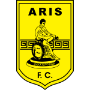
VS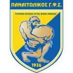
帕纳多里科斯仅赛程01:30德甲斯图加特 VS
VS 云达不莱梅仅赛程
云达不莱梅仅赛程
01:30沙特联阿尔艾利 VS
VS 泰渥已延期
泰渥已延期
01:30爱超德罗赫达联VS都柏林大学仅赛程
01:30英超诺丁汉森林 VS
VS 曼彻斯特城仅赛程
曼彻斯特城仅赛程
01:30英足总杯奥特林厄姆VS诺茨郡仅赛程
01:30西乙科尔多瓦VS休达仅赛程
01:30西乙莱加内斯VS阿尔瓦塞特仅赛程
01:30西甲奥萨苏纳 VS
VS 毕尔巴鄂竞技仅赛程
毕尔巴鄂竞技仅赛程
01:45苏超阿伯丁VS希伯尼安仅赛程
01:45荷甲海牙 VS
VS 鹿特丹斯巴达仅赛程
鹿特丹斯巴达仅赛程
02:00周日026葡超吉马良斯02:00智利甲拉塞雷纳VS巴勒斯坦人仅赛程
02:00法甲欧塞尔 VS
VS 巴黎FC仅赛程
巴黎FC仅赛程
02:00葡超阿维卡 VS
VS 卡萨皮亚仅赛程
卡萨皮亚仅赛程
02:00阿职联塔勒瑞斯VS 拉普拉塔大学生仅赛程
拉普拉塔大学生仅赛程
02:00阿职联门多萨体操击剑
02:30周日027德甲霍芬海姆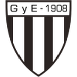
VS里瓦达维亚独立仅赛程02:30奥超里德VS 林茨仅赛程
林茨仅赛程
02:30意乙BeneventoVS阿韦利诺仅赛程
02:30罗甲布星VS胡内多阿拉乌鸦仅赛程
03:00巴乙阿瓦伊
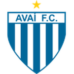
VS圣贝尔纳多仅赛程03:00比乙Excelsior VirtonVS比斯查仅赛程
03:00法乙圣埃蒂安VS拉瓦勒仅赛程
03:00法乙波城FCVS
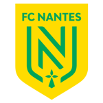
南特仅赛程03:10巴乙新奥里藏蒂诺VS福塔雷萨仅赛程
03:15波兰超罗兹维泽夫VS什切青波贡仅赛程
03:30德乙柏林赫塔VS 沃尔夫斯堡仅赛程
沃尔夫斯堡仅赛程
03:30瑞士超草蜢VS洛桑体育仅赛程
03:45周日028意甲佛罗伦萨03:45意甲罗马 VS
VS 萨索洛仅赛程
萨索洛仅赛程
03:45比甲安特卫普VS洛默尔仅赛程
03:45比甲拉路维尔VS色格拉布鲁日仅赛程
04:00周日030西甲马竞04:00苏超圣米伦VS流浪者仅赛程
04:00英足总杯彼得堡联VS雷丁仅赛程
04:00荷甲鹿特丹精英 VS
VS 前进之鹰仅赛程
前进之鹰仅赛程
04:00西乙格拉纳达VS特内里费已延期
04:00西甲瓦伦西亚 VS
VS 皇马仅赛程
皇马仅赛程
04:05法甲巴黎圣曼 VS
VS 特鲁瓦仅赛程
特鲁瓦仅赛程
04:30智利甲比尼亚德马埃弗顿VS康塞普西翁仅赛程
04:30葡超里斯本竞技 VS
VS 莫雷伦斯仅赛程
莫雷伦斯仅赛程
04:30阿职联博卡青年VS防御与正义仅赛程
04:30阿职联罗萨里奥中央VS里奥夸尔托大学生仅赛程
04:30阿职联青年人VS飓风队仅赛程
05:00巴西杯米竞技 VS
VS 格雷米奥仅赛程
格雷米奥仅赛程
05:00美职联华盛顿联VS 纽约城仅赛程
纽约城仅赛程
05:00美职联奥兰多城 VS
VS 新英格兰革命仅赛程
新英格兰革命仅赛程
05:00美职联纽约红牛 VS亚特联仅赛程
VS亚特联仅赛程
05:00美职联芝加哥火焰 VS
VS 哥伦布机员仅赛程
哥伦布机员仅赛程
05:00美职联蒙特利尔CFVS 温哥华白浪仅赛程
温哥华白浪仅赛程
05:00美职联费城联合 VS
VS 多伦多FC仅赛程
多伦多FC仅赛程
05:00美职联辛辛那提FC VS
VS 纳什维尔SC仅赛程
纳什维尔SC仅赛程
05:00美职联迈阿密国际 VS夏洛特FC仅赛程
VS夏洛特FC仅赛程
07:00墨超阿特拉斯VS帕丘卡仅赛程
07:00巴乙库亚巴VS尤文图德仅赛程
07:00巴乙维拉诺瓦VS克里西乌马仅赛程
08:00美职联休斯顿迪纳摩VS 圣路易斯城仅赛程
圣路易斯城仅赛程
08:00美职联圣迭戈FCVS堪萨斯城竞技仅赛程
08:00美职联奥斯汀FCVS 波特兰伐木者仅赛程
波特兰伐木者仅赛程
08:00美职联明尼苏达联VS 圣何塞地震仅赛程
圣何塞地震仅赛程
08:00美职联盐湖城 VS
VS 洛杉矶银河仅赛程
洛杉矶银河仅赛程
08:00美职联西雅图海湾人 VS
VS 洛杉矶FC仅赛程
洛杉矶FC仅赛程
08:00美职联达拉斯FC VS
VS 科罗拉多急流仅赛程
科罗拉多急流仅赛程
08:30巴乙累西腓航海VS巴西雷加塔斯仅赛程
11/07 · 30 场30 场
13:00周六001日职联横滨水手VS 冈山绿雉主胜1-11-1 未中13:00周六002日职乙鸟栖沙岩
冈山绿雉主胜1-11-1 未中13:00周六002日职乙鸟栖沙岩 VS
VS 富山胜利客胜1-11-2 中15:00周六003日职联柏太阳神VS川崎前锋主胜1-12-1 中15:30周六004韩K联金泉尚武
富山胜利客胜1-11-2 中15:00周六003日职联柏太阳神VS川崎前锋主胜1-12-1 中15:30周六004韩K联金泉尚武 VS
VS 安养FC主胜1-11-0 中18:45周六005澳超珀斯
安养FC主胜1-11-0 中18:45周六005澳超珀斯 VS
VS 纽喷气机主胜2-12-1 中20:30周六006英超利兹联
纽喷气机主胜2-12-1 中20:30周六006英超利兹联 VS
VS 热刺客胜1-11-0 未中20:30周六007英冠朴次茅斯
热刺客胜1-11-0 未中20:30周六007英冠朴次茅斯 VS
VS 斯托克城主胜1-11-2 未中21:00周六008西甲马拉加
斯托克城主胜1-11-2 未中21:00周六008西甲马拉加 VS
VS 桑坦德主胜1-11-2 未中22:00周六010意甲卡利亚里
桑坦德主胜1-11-2 未中22:00周六010意甲卡利亚里 VS
VS 弗洛西诺客胜1-11-0 未中22:15周六009意甲都灵
弗洛西诺客胜1-11-0 未中22:15周六009意甲都灵 VS
VS 莱切主胜1-11-1 未中22:30周六011德甲莱红牛
莱切主胜1-11-1 未中22:30周六011德甲莱红牛 VS
VS 奥格斯堡主胜2-15-2 中22:30周六012德甲帕德博恩
奥格斯堡主胜2-15-2 中22:30周六012德甲帕德博恩 VS
VS 法兰克福客胜1-12-2 未中22:30周六013德甲多特蒙德
法兰克福客胜1-12-2 未中22:30周六013德甲多特蒙德 VS
VS 埃沃斯堡主胜2-02-1 中22:30周六014德甲美因茨
埃沃斯堡主胜2-02-1 中22:30周六014德甲美因茨 VS
VS 拜仁客胜1-21-2 中23:00周六015英超阿森纳
拜仁客胜1-21-2 中23:00周六015英超阿森纳 VS
VS 赫尔城主胜1-01-0 中23:00周六016英超富勒姆
赫尔城主胜1-01-0 中23:00周六016英超富勒姆 VS
VS 纽卡斯尔主胜1-11-1 未中23:00周六017英冠伯明翰
纽卡斯尔主胜1-11-1 未中23:00周六017英冠伯明翰 VS
VS 斯旺西主胜1-12-1 中23:15周六019西甲西班牙人
斯旺西主胜1-12-1 中23:15周六019西甲西班牙人 VS
VS 拉科主胜1-10-0 未中23:30周六020荷甲福图纳
拉科主胜1-10-0 未中23:30周六020荷甲福图纳 VS斯达主胜1-12-2 未中00:30周六021瑞超代格福什VS盖斯客胜1-11-2 中01:00周六022意甲帕尔马VS博洛尼亚客胜0-11-2 中01:30周六023英超诺丁汉VS曼城客胜0-13-1 未中01:30周六024德甲斯图加特VS不来梅主胜1-11-0 中01:30周六025西甲奥萨苏纳VS毕尔巴鄂客胜1-11-1 未中02:00周六026法甲欧塞尔VS巴黎FC客胜0-10-1 中02:00周六027葡超阿尔维卡VS卡萨皮亚主胜1-01-1 未中03:45周六028意甲罗马VS萨索洛主胜2-03-0 中05:00周六029巴西杯米竞技VS格雷米奥主胜1-01-1 未中08:10周六030美职联盐湖城VS洛城银河主胜1-12-1 中—周六018挪超克里斯蒂
VS斯达主胜1-12-2 未中00:30周六021瑞超代格福什VS盖斯客胜1-11-2 中01:00周六022意甲帕尔马VS博洛尼亚客胜0-11-2 中01:30周六023英超诺丁汉VS曼城客胜0-13-1 未中01:30周六024德甲斯图加特VS不来梅主胜1-11-0 中01:30周六025西甲奥萨苏纳VS毕尔巴鄂客胜1-11-1 未中02:00周六026法甲欧塞尔VS巴黎FC客胜0-10-1 中02:00周六027葡超阿尔维卡VS卡萨皮亚主胜1-01-1 未中03:45周六028意甲罗马VS萨索洛主胜2-03-0 中05:00周六029巴西杯米竞技VS格雷米奥主胜1-01-1 未中08:10周六030美职联盐湖城VS洛城银河主胜1-12-1 中—周六018挪超克里斯蒂 VS
VS 瓦勒伦加客胜1-1待开赛
瓦勒伦加客胜1-1待开赛
11/06 · 14 场14 场
—周五001澳超悉尼FC VS
VS 中央海岸主胜1-04-1 中—周五002德乙不伦瑞克
中央海岸主胜1-04-1 中—周五002德乙不伦瑞克 VS
VS 科特布斯主胜1-10-0 未中—周五003瑞超哈马比
科特布斯主胜1-10-0 未中—周五003瑞超哈马比 VS
VS 埃夫斯堡主胜2-04-1 中—周五004法乙蒙彼利埃
埃夫斯堡主胜2-04-1 中—周五004法乙蒙彼利埃 VS
VS 梅斯主胜1-12-3 未中—周五005荷甲威廉二世
梅斯主胜1-12-3 未中—周五005荷甲威廉二世 VS
VS 兹沃勒客胜1-11-1 未中—周五006荷乙奥斯
兹沃勒客胜1-11-1 未中—周五006荷乙奥斯 VS
VS 瓦尔韦克客胜1-11-1 未中—周五007德甲汉堡
瓦尔韦克客胜1-11-1 未中—周五007德甲汉堡 VS
VS 门兴主胜1-13-1 中—周五008意甲威尼斯
门兴主胜1-13-1 中—周五008意甲威尼斯 VS
VS 乌迪内斯主胜1-12-1 中—周五009法甲图卢兹
乌迪内斯主胜1-12-1 中—周五009法甲图卢兹 VS
VS 斯特拉斯主胜1-13-1 中—周五010英超埃弗顿
斯特拉斯主胜1-13-1 中—周五010英超埃弗顿 VS
VS 考文垂主胜1-03-1 中—周五011英冠德比郡
考文垂主胜1-03-1 中—周五011英冠德比郡 VS
VS 博尔顿主胜1-13-1 中—周五012西甲塞维利亚
博尔顿主胜1-13-1 中—周五012西甲塞维利亚 VS
VS 阿拉维斯主胜1-10-0 未中—周五013葡超法马利康
阿拉维斯主胜1-10-0 未中—周五013葡超法马利康 VS
VS 阿罗卡主胜1-11-0 中—周五014巴甲维多利亚
阿罗卡主胜1-11-0 中—周五014巴甲维多利亚 VS
VS 弗鲁米嫩客胜1-10-3 中
弗鲁米嫩客胜1-10-3 中
11/05 · 13 场13 场
—周四001亚冠乙町田泽维VS上海申花主胜1-02-1 中—周四002欧罗巴水晶宫 VS霍芬海姆主胜1-11-1 未中—周四003欧罗巴布斯巴达VS
VS霍芬海姆主胜1-11-1 未中—周四003欧罗巴布斯巴达VS 伯恩茅斯客胜0-21-3 中—周四004欧罗巴奈梅亨VS
伯恩茅斯客胜0-21-3 中—周四004欧罗巴奈梅亨VS 奥莫尼亚主胜2-13-1 中—周四005欧罗巴皇家社会
奥莫尼亚主胜2-13-1 中—周四005欧罗巴皇家社会 VS里昂主胜2-11-1 未中—周四006欧罗巴AC米兰
VS里昂主胜2-11-1 未中—周四006欧罗巴AC米兰 VS
VS 费伦茨主胜2-00-2 未中—周四007欧协联特拉布宗VS弗赖堡主胜1-10-1 未中—周四008欧罗巴桑德兰
费伦茨主胜2-00-2 未中—周四007欧协联特拉布宗VS弗赖堡主胜1-10-1 未中—周四008欧罗巴桑德兰 VS
VS 萨迪纳摩主胜2-10-2 未中—周四009欧罗巴塞尔塔VS圣吉联合主胜1-11-2 未中—周四010欧罗巴本菲卡VS波兹南主胜3-03-1 中—周四011欧罗巴阿尔克马
萨迪纳摩主胜2-10-2 未中—周四009欧罗巴塞尔塔VS圣吉联合主胜1-11-2 未中—周四010欧罗巴本菲卡VS波兹南主胜3-03-1 中—周四011欧罗巴阿尔克马 VS尤文图斯客胜1-11-2 中—周四012欧罗巴勒沃库森
VS尤文图斯客胜1-11-2 中—周四012欧罗巴勒沃库森 VS马赛主胜2-10-1 未中—周四013巴甲帕梅拉斯VS
VS马赛主胜2-10-1 未中—周四013巴甲帕梅拉斯VS 里莫主胜2-06-1 中
里莫主胜2-06-1 中
更早的场次见 历史归档。